Lastfit
Every foot looks different. Although there are feet which have an identical size in foot length,
they might have different foot width and height. However, most of the ready-made shoes sold on stores
are discriminated only by foot lengths for convenience which results in giving unsatisfying experience to customers.
One way for the customers not to get stressed from this dissatisfaction is to buy custom-made shoes, but it is often
discouraged since it requires more time and cost than ready-made ones.
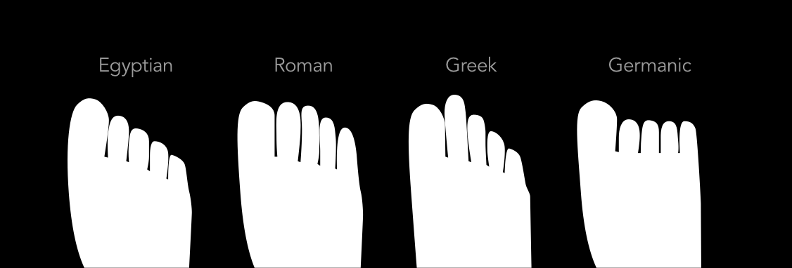
Why do we have to wear the same shoes even though we all have different feet?
Field Research
Lack of three factors: Accessibility, Promotion, and Differentiation.
I conducted initial market research to know the present situation of the shoemaking industry.
To sum up, I found out that the domestic shoe industry of men’s bespoke shoes had constantly
been growing its sales for over a decade. In spite of the growing interest in bespoke shoes of customers,
it was focused on online sales rather than those of offline due to lack of three factors:
accessibility, promotion, and differentiation.
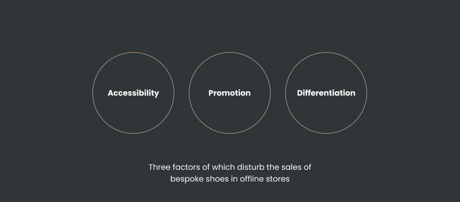
Unpleasant experience since the material and shape of the shoes were different form what they imagined.
I conducted further research by interviewing and surveying customers who had purchased shoes both online and offline shops.
What is worth noticing was that many customers replied that they are unwilling to shop at offline shops, mostly because of
the lack of shoe designs. Besides, for some customers who bought their shoes at online stores, it was an unpleasant experience
since the material and shape of the shoes were different from what they imagined.
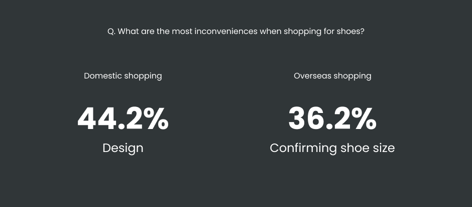
Small business owners are limited in the use of tools due to constraints in space and economy.
It was also important to hear the voice of shoemakers, especially those who run a small business,
in that they can provide diversity in shoe designs. Through in-depth interviews, I figured out that one of the biggest problems
of the small business owners in making shoes is limited use of tools since there was not enough space to keep all items,
particularly the shoe last.
Project goals
Providing different values for customers and shoemakers
From the researches, I have defined the critical values for each user: customer and shoemaker. Based on these values, I was able to set design directions.
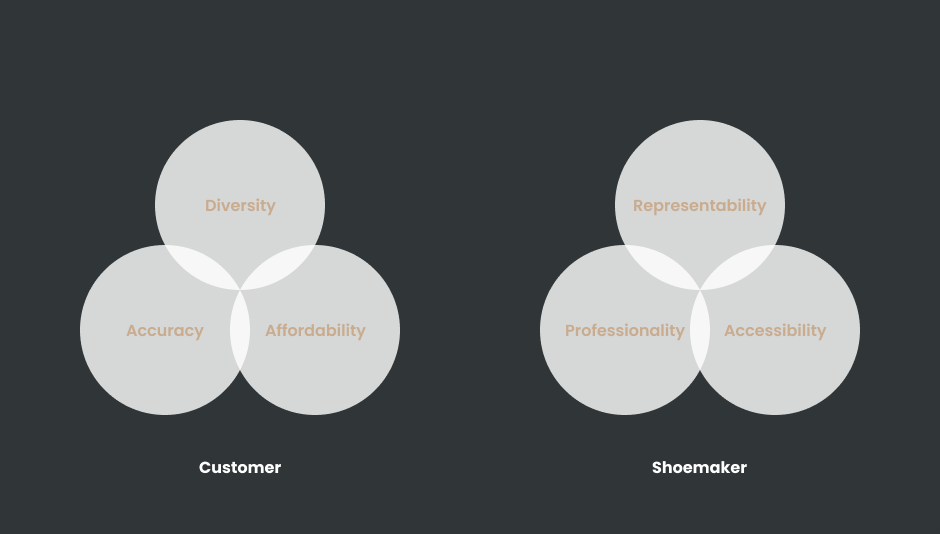
Concept Refinement
A Bespoke Shoe Service Platform for customers and shoemakers
Lastfit is a bespoke shoe service platform for customers and shoemakers. Customers can purchase bespoke shoes without the need to visit offline stores,
while shoemakers can not only earn money but promote their brands. Also, Lastfit manufactures and manages shoe last made with 3D printing, which gives advantages
for both customers and shoemakers. Customers could reuse the shoe last whenever they purchase shoes at Lastfit, which in turn reduces the overall price of the order,
while shoemakers could make perfect-fitting shoes by getting personalized shoe lasts.
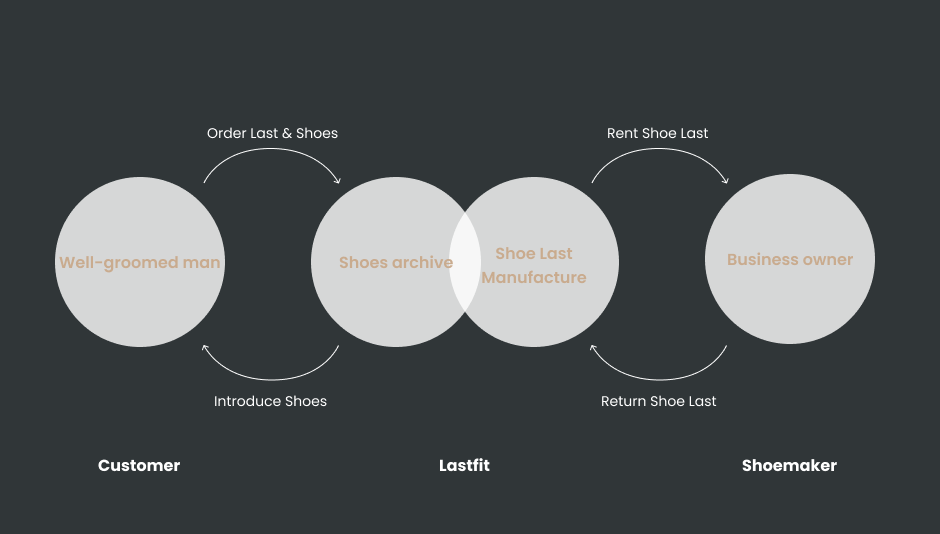
UI Design
Explore Lookbooks
Customers can also search for shoes by exploring styles. It is provided in a full-screen view to make ease of checking the outfits.
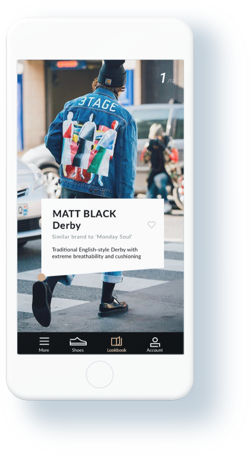
Explore Shoes
Customers can explore all kinds of shoes. The “For You” section recommends shoes based on the individual’s preferences.
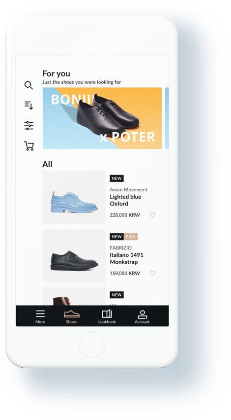
Shoes Filters
Customers can easily find shoes they are looking for by using shoe filters. Utilizing various filters, including shoe types, price, color, and country, they can access the shoes they want.
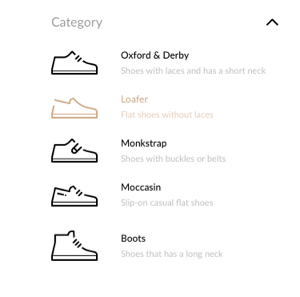
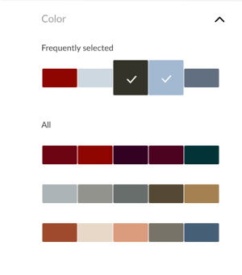
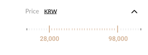
Shoes Details
Customers can confirm detail information on shoes with images. Images are shown at the upper part of the screen, and customers can see more by swiping them.
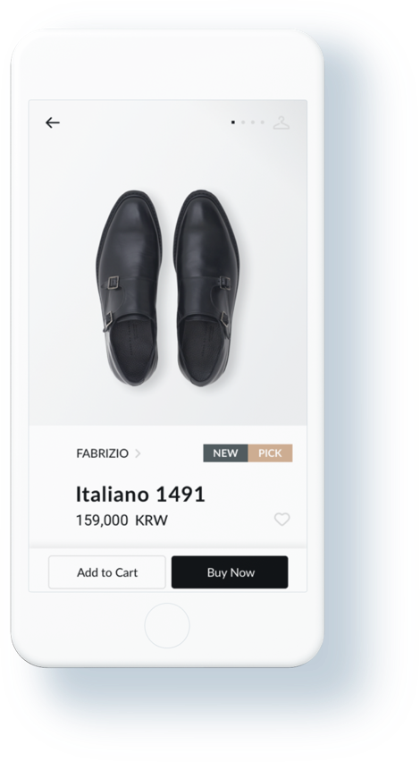
Available Sizes
Customers can check the availability of using their shoe last by tapping the "Check Availability" button. If customers do not have any shoe last, the "Order Last" button will appear instead, which will proceed with foot size measurement tutorials.
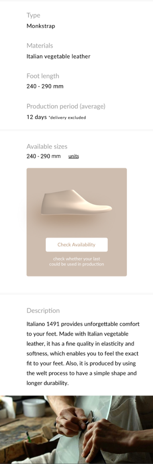
Shoemaker's profile
It introduces the shoemaker's brand by describing the career and displaying the overall ratings of the shoemaker. Also, it shows tags that indicate the strengths of the shoemaker, and customers can discover other shoemakers by selecting the tag.
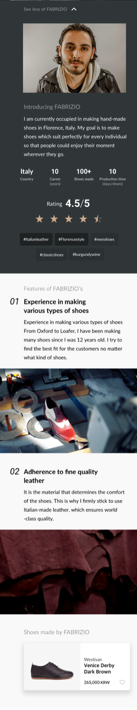
Order Shoe Last
Customers can submit their foot sizes in detail by following foot measurement tutorials. There are four steps to complete the measurement, and customers can easily follow the process with images shown at the top.
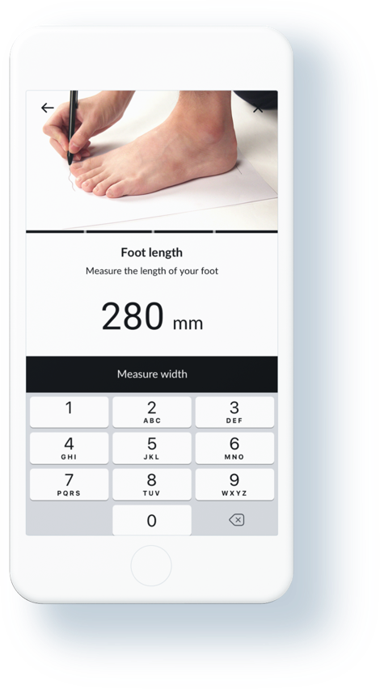
Order Status
After the checkout, customers can easily track the manufacturing procedures of their shoes at "Order status" menu. They can keep in touch with the shoemaker through 1:1 chatting.
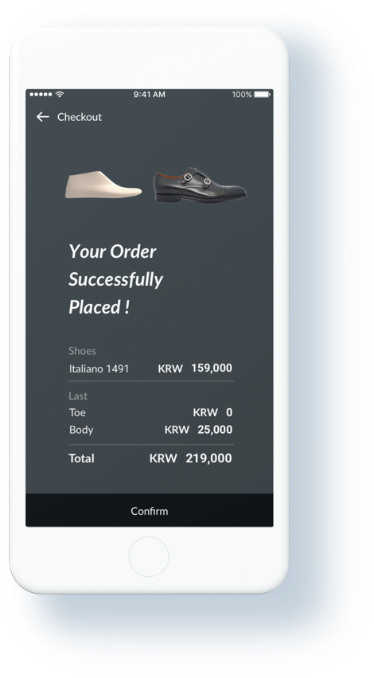
Tangible Product Design
Shoe last is composed of two modules—Toe and Body. Toe module has four different shapes: Round, Pointed, Square, and Chisel. Every module is manufactured based on the measurement of customer’s foot. When customers
order the shoe last, it is made with 3D printing, which reduces the work of shoemakers and increases the accuracy of the shoe last.
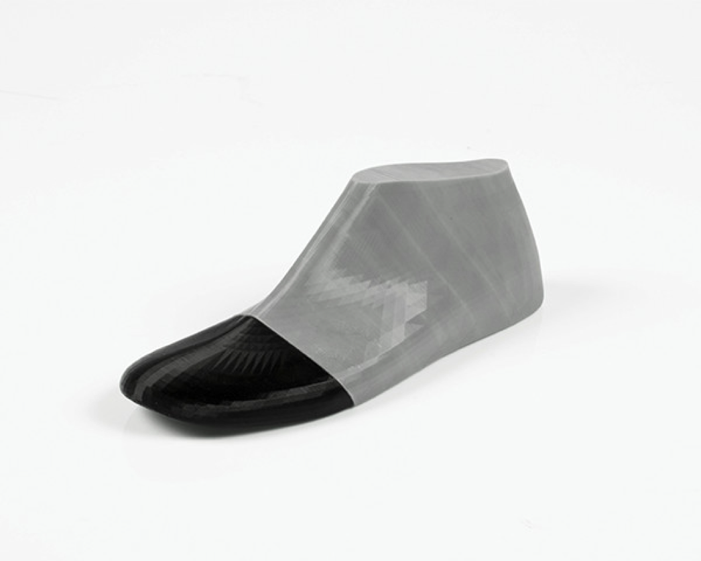